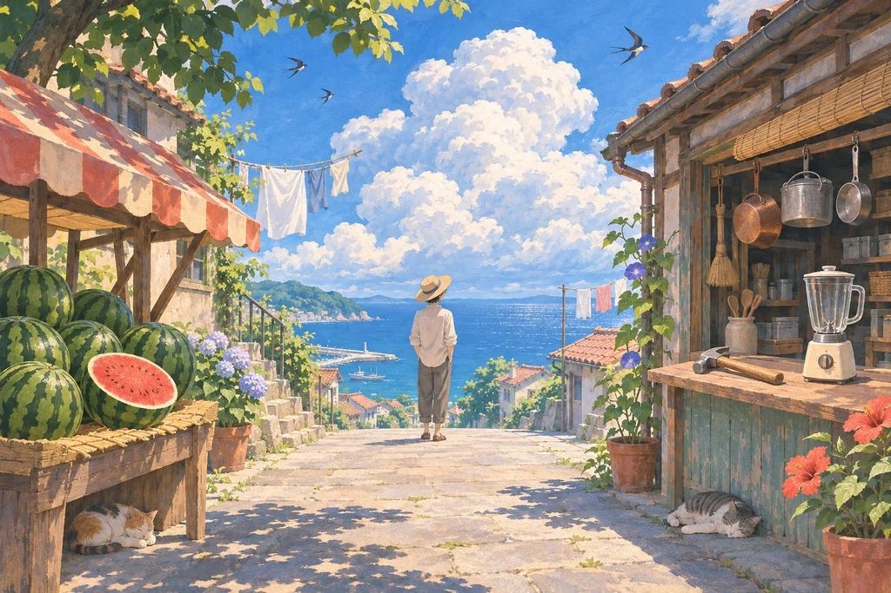
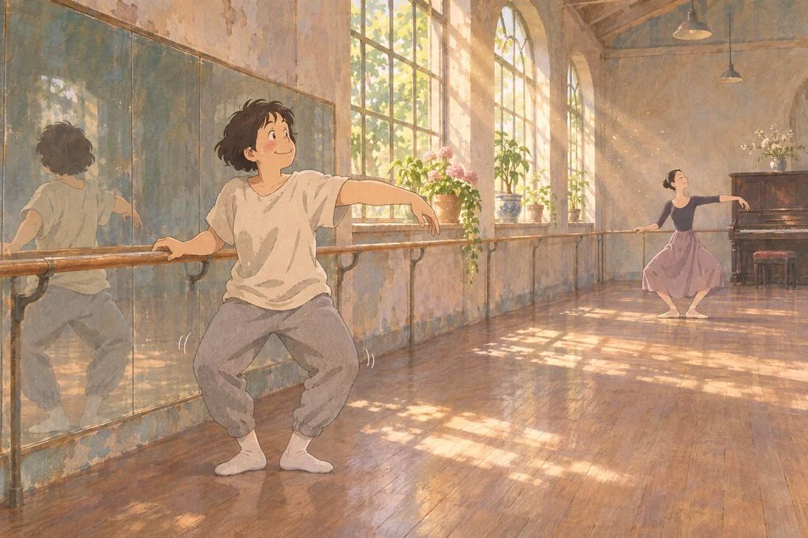
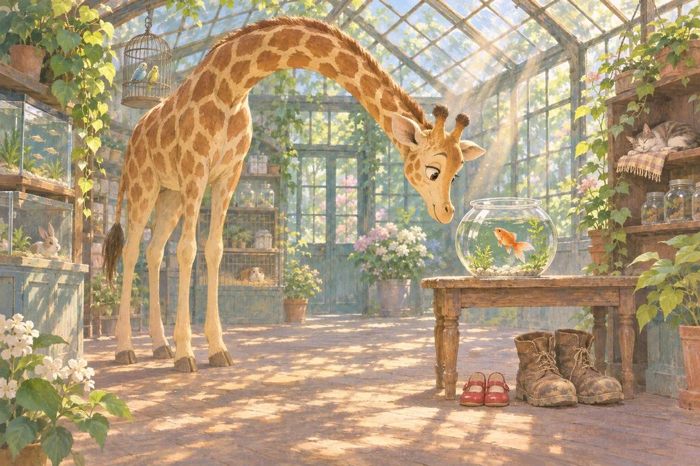
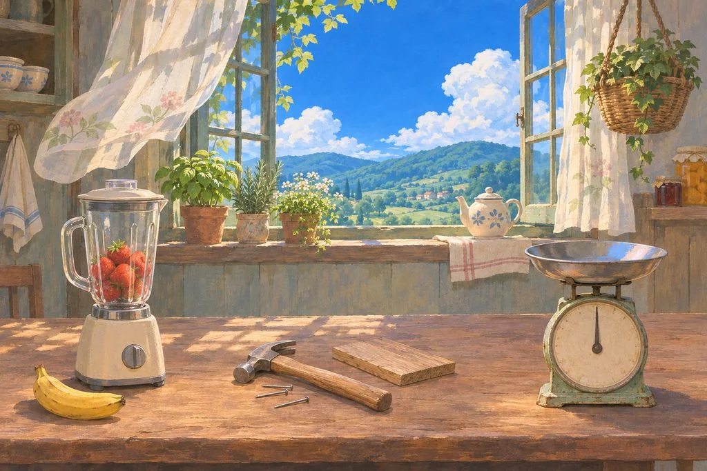
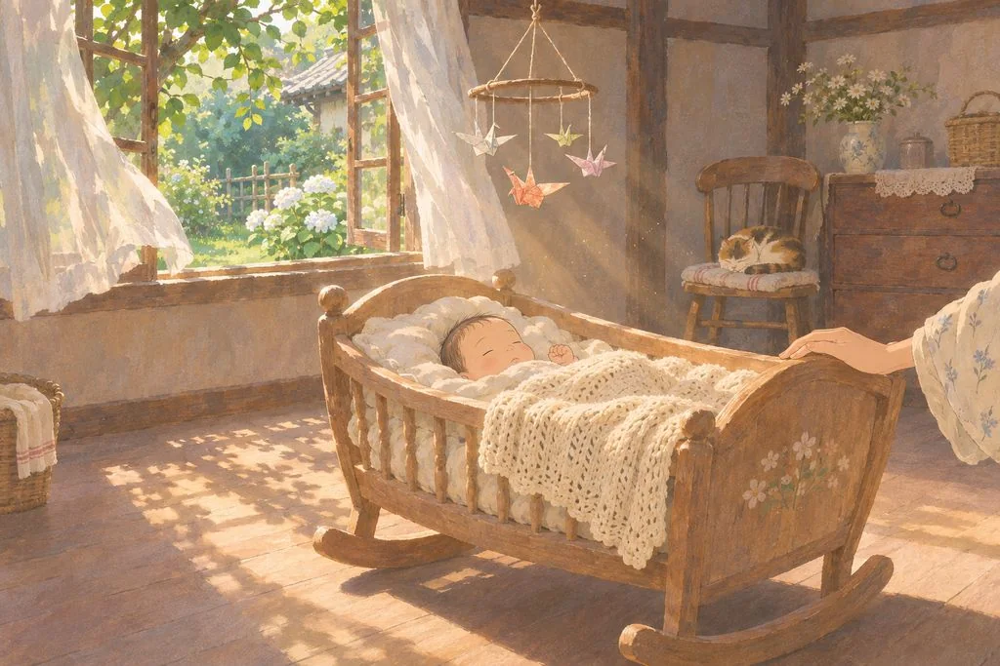
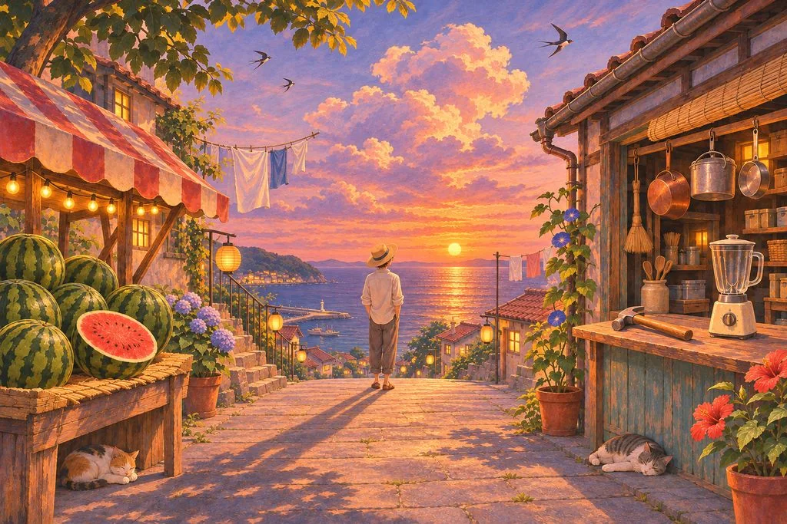

Статья психолога
Перестаньте «поднимать» самооценку
Почему попытка доказать собственную ценность превращает жизнь в вечный аукцион — и как навести порядок в одном слове, чтобы вернуть себе право ошибаться
Почти каждый второй клиент приходит в кабинет психотерапевта с одной и той же формулировкой: «У меня проблемы с самооценкой». В этот момент между нами повисает обманчивая иллюзия понимания. Кажется, мы оба знаем, о чём речь. На деле под словом «самооценка» люди прячут всё что угодно — от неспособности чувствовать себя супергероем до парализующего страха выступить на совещании.
С этим словом обращаются как с давлением в шинах: упало — надо срочно подкачать. Записаться на курс уверенности, выписать двадцать своих достоинств, повторить перед зеркалом, что ты молодец.
Но что, если проблема вообще не в том, высокая у нас самооценка или низкая? Что, если вся путаница начинается в тот момент, когда мы не различаем, что именно мы оцениваем и зачем?
Оценка — это глагол
Прежде всего стоит признать простую вещь: выключить оценку в голове невозможно. Наш мозг — эволюционная машина для сравнения, взвешивания и прогноза. Требовать от него «просто перестать себя оценивать» — всё равно что запретить лёгким дышать.
Чтобы выбраться из ловушки, достаточно аккуратно развести два понятия, которые срослись в одно:
* Оценка — это глагол. Само действие, процесс измерения.
* Ценность — это существительное. Предмет, ради которого мы вообще берём в руки линейку.
В науке давно различают объект и предмет исследования. Если учёный изучает сладость арбуза, то сам арбуз — это объект, а его сладость — предмет. В том, что мы называем самооценкой, человек берёт в качестве объекта самого себя, а предметом измерения назначает собственную ценность.
Именно здесь всё и ломается. Чтобы не утонуть в этом клубке, полезно всякий раз задавать себе короткий рабочий вопрос: «Что именно я сейчас оцениваю — и с какой целью?»
Целей я предлагаю две:
1. Эффективность — насколько хорошо, точно или профессионально что-то сделано.
2. Ценность — насколько это важно, дорого и значимо лично для меня.
И категорий, к которым мы прикладываем линейку, тоже две:
1. Конкретные действия и навыки, которые действительно поддаются измерению.
2. Личность целиком — я сам как человек.
Кривой балет и жираф в аквариуме
Посмотрим, как эта путаница работает на практике. Представьте, что я — человек, совершенно не умеющий танцевать, — внезапно решаю пойти на балет.

Если я живу в привычной парадигме «смешанной самооценки», всё закончится уже на первом занятии у станка. Я посмотрю в зеркало, сравню своё неуклюжее плие с движениями преподавателя, мгновенно вынесу приговор всей своей личности — «я бездарное ничтожество» — и больше никогда не переступлю порог этого зала.
По сути, я только что измерил ценность целого человека по точности одного движения. Это примерно так же осмысленно, как объявить детскую обувь бракованной, потому что она не налезает на взрослую ногу, или списать жирафа в бесполезные существа за то, что он не помещается в аквариум.

Но стоит разделить понятия — и та же сцена в балетном классе начинает выглядеть иначе:
* Эффективность моего навыка: единица из десяти. Объективно я деревянный, путаю позиции и заваливаю корпус. Для сцены Большого театра мой результат равен нулю. И это совершенно нормально — я не премьер труппы.
* Ценность этого навыка: относительна. Для театра она по-прежнему нулевая. Но для меня самого эти нелепые движения стоят целого состояния: это шаг, который я сделал вопреки скованности и страху.
* Ценность моей личности: вне шкалы. Моё человеческое достоинство ни на миллиметр не усыхает от того, что я криво стою у станка. Сам факт, что я разрешил себе пойти в новый, пугающий опыт, уже огромен.
* Смелость поступка: запредельна. В собственных глазах я выгляжу чертовски достойно просто потому, что дошёл до зала, выдержал неловкость и попробовал.
Когда мы перестаём валить всё в одну корзину, происходят четыре заметных сдвига.
Во-первых, ваша ценность становится устойчивой. Базовое право на уважение и тепло наконец выводится из-под рыночных законов: проваленный проект или кривое плие больше не сбрасывают вас в пропасть стыда. Во-вторых, оценка навыков становится трезвой и гибкой: вам больше не приходится раздувать искусственную уверенность и врать себе, что вы блестяще справляетесь со всем подряд — оценка эффективности возвращается к своей прямой работе, помогая учиться и адаптироваться.
А главное, появляется двойная свобода. Свобода от парализующего перфекционизма, вечного гула внутреннего критика и изматывающей необходимости каждое утро заново доказывать своё право на место под солнцем. И свобода для — быть новичком, ошибаться, петь мимо нот, запускать несовершенные проекты и танцевать свой кривой балет просто потому, что этот опыт важен лично вам.
Как взвесить синий цвет
Впрочем, если сделать ещё один шаг назад, откроется ещё более радикальная вещь. Любая попытка выставить балл своей личности — хоть по шкале эффективности, хоть по шкале ценности — абсурдна уже в самой своей идее.
Измерять конкретные навыки (как я вожу машину, пишу тексты, веду переговоры) полезно и необходимо — без этого нет роста. Но как только мы разворачиваем линейку на собственное «Я», мы неизбежно сталкиваемся с четырьмя тупиками.

Ошибка категорий. Эффективность существует только там, где есть строго заданная функция. Мы легко можем оценить блендер (как быстро и тихо он измельчает, насколько мелко рубит) или молоток (как лежит в руке, как бьёт по шляпке гвоздя, сколько прослужит). Причём для каждого свойства понадобится отдельный критерий. А в чём состоит «функция» Саши, Оли или Алексея? Эффективно дышать? Продуктивно смотреть на облака? Измерять эффективность человеческой личности — всё равно что пытаться взвесить на кухонных весах синий цвет.

Ловушка полезности. Культура достижений приучила нас ставить знак равенства между ценностью и КПД, но в человеческом измерении эта формула рассыпается на первом же примере. Возьмите новорождённого. С точки зрения производительности он — абсолютный ноль: не создаёт продукт, не платит налогов, только спит, кричит и пачкает подгузники. По меркам эффективности — худший сотрудник года. Но какова его ценность? Для родителей — бесконечна. Ценность вообще живёт только в живом субъективном взгляде, а не в бухгалтерской таблице. Если привязать достоинство человека к его полезности, придётся списать со счетов младенцев, тяжелобольных и глубоких стариков — а это уже прямой путь прочь от гуманизма.
Рецензия на недописанную книгу. Любая оценка — это застывший штамп: «сдано на четвёрку», «стоит сто рублей». Но личность — не предмет на витрине, а живой, незавершённый процесс. Станете ли вы писать разгромную рецензию на роман, в котором автор успел сочинить три главы, или оценивать фильм по первым пяти минутам? Вы в тишине ночи, вы в разгар рабочего аврала, вы в горе и в смехе — это разные грани потока, который меняется каждую секунду. Оценить личность целиком — значит попытаться сфотографировать ветер или унести реку в стакане. В саму секунду фиксации ускользает главное: движение.
Вечный аукцион. Стоит лишь согласиться с тем, что у вашей личности есть рейтинг — пусть даже сегодня это гордые «десять из десяти», — и вы подписываете контракт на пожизненные эмоциональные качели. Сегодня вы закрыли сделку, получили похвалу и чувствуете себя на вершине. Завтра забыли ключи, сорвались на близкого, провалили важную встречу — и в собственных глазах за минуту превращаетесь в уценённый, бракованный товар с биркой «два из десяти». Как только право на уважение становится условным, жизнь превращается в бесконечный смотр, где каждое утро на горизонте гарантированно возникает кто-то моложе, умнее, красивее, успешнее и ярче — а значит, якобы достойнее любви, чем вы.
Выход из этой системы прост на словах и требует честной практики в жизни: нужно раз и навсегда вывести свою личность из зоны оценки.
Оставьте баллы, критерии и шкалы для ремесла, поступков и навыков — там они незаменимы. Можно спокойно сказать себе: «Этот текст вышел слабым, его стоит переписать» или «В этом разговоре я поступил резко, надо извиниться».

А напротив собственной личности поставьте негласную пометку: «Данные недоступны для оценки». У вашего «Я» нет и не может быть ценника, потому что вы — не товар на полке супермаркета. Вы просто есть: живой человек, который прямо сейчас проживает свой опыт впервые. И этого более чем достаточно.
Не нужно тратить годы на то, чтобы «поднимать» самооценку — это изматывающая игра, в которой вы обречены то мнить себя супергероем, то проваливаться на дно из-за первого же промаха. Мне кажется гораздо плодотворнее просто навести порядок в словах.